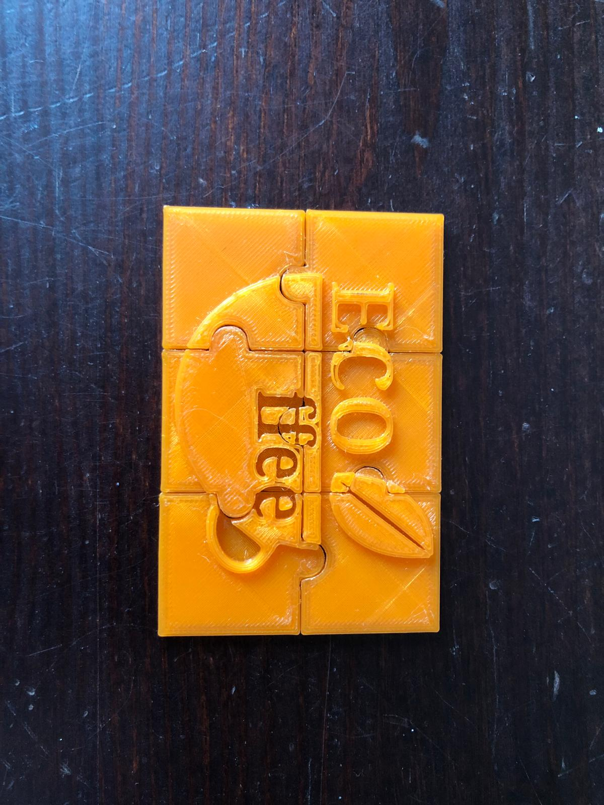
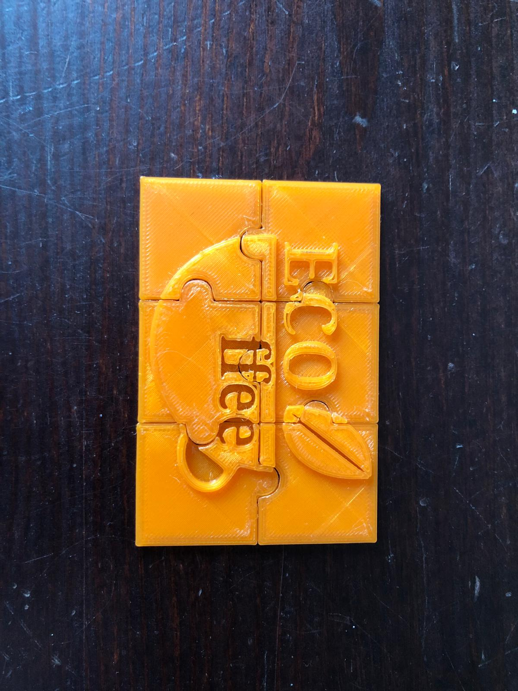

Mans Datorikas Portfolio
Makar Mayorov 10.e
RASTRA GRAFIKA
Šajā projektā, semestra sākumā mēs strādājām ar rastra grafiku, izmantojot GIMP (GNU Image Manipulation Program). Šī programma ļāva mums rediģēt fotogrāfijas, pielietot dažādus filtrus un efektus, kā arī veidot animētus GIF attēlus. Mēs apguvām, kā strādāt ar slāņiem un rīkiem, kas palīdz uzlabot attēla kvalitāti un pievienot radošus elementus. Daži piemēri no maniem darbiem ir redzami zemāk.


VEKTORGRAFIKA
Pēc rastra grafikas mēs pārgājām uz vektorgrafiku, izmantojot programmu Inkscape. Vektorgrafika ir īpaši noderīga ilustrācijām, ikonām, logotipiem un tehniskajiem zīmējumiem. Šajā projektā es izveidoju savu logotipu, kuru vēlāk izmantoju arī 3D projektā. Strādājot ar Inkscape, es iemācījos izmantot līknes, formas un objektu transformācijas, lai izveidotu precīzu un profesionālu dizainu. Izmantojot vektorgrafikas programmu Inkscape, es izveidoju arī plakātu par ledājiem. Piemērs manam darbam ir redzams zemāk.


3D MODELĒŠANA
Šajā projektā mēs izveidojām savu uzņēmumu, izstrādājot uzņēmuma plānu, misiju un vīziju. Tad mēs izveidojām logotipu, kuru pārvērtām par 3D modeli. Mēs izmantojām Tinkercad, lai radītu 3D logotipa puzli, kuru vēlāk izdrukājām ar 3D printeri. Šis uzdevums bija lieliska iespēja iepazīties ar 3D modelēšanu un ideju īstenošanu digitāli.


 

VIDEO MONTĀŽA
Šim projektam es rediģēju video, izmantojot Apple iMovie programmu video montāžai. Es apkopoju visu nepieciešamo materiālu, sakārtoju kadrus, izveidoju scenāriju, pielietoju pārejas efektus un pievienoju dažādus vizuālus uzlabojumus, lai video izskatītos dinamiskāks un profesionālāks. Turklāt es izveidoju reklāmas videoklipu par divu faktoru autentifikāciju, ko izstrādāju PowerPoint programmā un eksportēju uz video. Šis projekts man palīdzēja labāk izprast video montāžas procesu un dažādu efektu nozīmi gala rezultātam.

TEKSTAPSTRĀDE - WORD
Strādājot ar Microsoft Word, es izveidoju dažādus dokumentus, koncentrējoties uz to vizuālo izskatu un struktūru. Es pielietoju dažādus formatēšanas rīkus – stilus, sadaļas, tabulas un attēlus, lai dokumenti izskatītos profesionāli un labi organizēti. Strādājot ar tekstiem, es apguvu, kā efektīvi izmantot lappušu numerāciju, automātiskos satura rādītājus un citus elementus, kas atvieglo dokumentu pārvaldību. Šis projekts man palīdzēja labāk saprast, kā veidot skaidrus un strukturētus tekstus, kas noder gan prezentācijām, gan ikdienas darbam.
IZKLĀJLAPAS - EXCEL
Strādājot ar Excel, es pats izveidoju dažādas tabulas, eksperimentēju ar formulām un analizēju datus, izmantojot Pivot tabulas un citas funkcijas. Man bija svarīgi saprast, kā dažādas formulas var palīdzēt automatizēt aprēķinus un kā pareizi strukturēt lielu informācijas apjomu. Šis darbs man lika vairāk domāt par datu sakārtošanu un analīzi, kā arī par to, kā Excel var būt noderīgs ikdienas uzdevumu veikšanā.
KONTROLDARBS
Datorikas pārbaudes darbs, kas sadalīts divās daļās. Šeit ir saites uz projektiem: